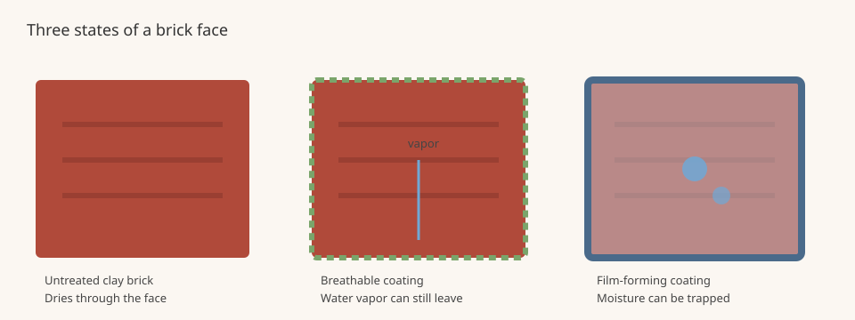

Mortar Smash › Trade guides › Sealing or painting brick
Brick does not need a sealer to stay dry if the wall was specified, detailed, built and maintained as a drainage or mass wall should be. The Brick Industry Association's Technical Note 6A (August 2008) and Technical Note 6 (March 2025) are the sources for this page. They are workmanship and materials notes. The current code edition, the brick manufacturer and the project specification come first.
Short answer
A clear water-repellent coating is not required for water resistance on sound brickwork in normal exposures, and BIA 6A does not recommend it on new brick veneer or cavity walls, or on clay paver pavements. Paint and other appearance treatments are a separate choice. They can be hard to reverse, they need maintenance, and they can harm the wall if moisture is trapped. Fix leaks and open joints first, then decide whether a treatment is still wanted.
Clear sealers are not a waterproofing shortcut
Technical Note 6A says the most effective ways to keep water out are careful material selection, proper design and detailing, good workmanship and proper maintenance, which the Technical Note 7 series covers in more detail. Drainage walls such as brick veneer and cavity walls are designed so that water that passes the outer brick can drain at the flashing and weeps. See weep holes in brick walls.
Water-repellent coatings, the 2008 note says, are most effective at reducing the amount of water the masonry absorbs. Water usually penetrates at separations and cracks between brick and mortar, or where brick meets other materials. A change in absorption may not significantly reduce leakage. Coatings cannot make up for poor sills, caps or copings, or for incompletely filled joints. Penetrating water-repellent coatings seldom stop water through cracks more than 0.02 in. (0.5 mm) wide, and their effect in wind-driven rain is limited. Using a sealer to fix a wall that already has defects can be futile.
BIA 6A therefore says to correct the conditions that let water in before any coating is applied, and it lists common repairs that a coating should not replace: replacing failed sealant at windows, copings, sills and movement joints, and repointing cracked or poorly filled joints. The note also says application is not recommended on newly constructed brick veneer or cavity walls, or on new or existing pavements of clay pavers.
If a coating is still considered
BIA 6A says to consult the brick manufacturer before choosing a coating, to use only products intended for clay brickwork, and to weigh every property of the coating, not only the one you want. Except for anti-graffiti work, it recommends breathable coatings with a water vapor permeability of 0.98 or greater as measured by ASTM E96, and it says not to apply film-forming coatings to brickwork in freeze-thaw climates. Past performance of the same coating, on similar brick and mortar and in the same exposure, for at least five years, should be required. This page is not an application guide; the 2008 note says to use an experienced contractor and to follow the coating manufacturer's directions.
Paint and other appearance treatments
Technical Note 6 covers paints, stains, limewash, mineral paints, mortar wash and pigmented water repellents. Many of those treatments are hard to reverse. Paint, the 2025 note says, can be very difficult to remove from brick without causing damage, and painted exterior brickwork can need regular repainting. Treatments are sometimes suggested to hide deteriorating brick. BIA warns that unaddressed moisture is usually the cause of that deterioration, and that a coating can make the wall worse if it traps water. Evaluate and repair units, mortar, weeps, flashing and sealant joints, and clean the wall, before anything is applied. New or repaired masonry should cure and dry completely, at least 30 days.
The 2025 note also draws a line between mineral-based treatments, which generally penetrate the pores and maintain water vapor permeance, and non-mineral film-forming treatments, which can reduce it. Drainage walls, which can dry into the cavity, allow more flexibility than barrier or mass walls, which rely on drying through the brick face. Interior faces of mass walls should be treated with the same caution as exteriors if the wall was designed to dry both ways. Avoid treatments on glazed brick, on pavers and floors, and on functioning fireboxes, unless the treatment manufacturer specifically allows it. Use a mock-up to approve the look, and ask the brick manufacturer, or a qualified registered design professional, if the assembly is unusual.
Exterior brick that will be painted should still be a weathering-grade unit (generally ASTM Grade SW, or Grade MW where that grade is permitted). Painting is not a substitute for choosing the right brick. See brick frost resistance grades and which bricks for which jobs.

Sealing or painting brick FAQ
Do I need to seal new brick veneer?
BIA Technical Note 6A (August 2008) says a water-repellent coating is not necessary to achieve water resistance in brickwork subjected to normal exposures when materials, detailing, construction and maintenance have been done properly. The same note says application is not recommended on newly constructed brick veneer or cavity walls, or on new or existing clay paver pavements.
Will a clear sealer stop a leaking wall?
Usually not by itself. Technical Note 6A says water usually enters at separations and cracks between brick and mortar, or at junctions with other materials, and that penetrating water-repellent coatings seldom stop water through cracks more than 0.02 in. (0.5 mm) wide. The note says to find and repair the source of water, including failed sealant and open mortar joints, before any coating is considered.
Is it safe to paint exterior brick?
Only after the wall is sound and dry, and only with a treatment suited to that assembly. Technical Note 6 (March 2025) warns that paint can be very difficult to remove without damage, and that treatments can trap moisture if leaks are not fixed first. It advises consulting the brick manufacturer and, if you are unsure, the treatment manufacturer or a qualified registered design professional. New or repaired masonry should cure and dry completely (at least 30 days) before a treatment is applied.
Where does BIA say not to apply these treatments?
Technical Note 6 says to avoid treatments on glazed brick, pavers and floors, and functioning fireboxes in fireplaces or residential brick ovens, unless the treatment manufacturer specifically allows it. Technical Note 6A says not to apply film-forming coatings to brickwork in freeze-thaw environments.
Sources
- BIA Technical Note 6, Changing the Appearance of Brick Masonry (March 2025)
- BIA Technical Note 6A, Colorless Coatings for Brick Masonry (August 2008)
Figures and uses are quoted or condensed from the sources above, which were read on 12 November 2026. Codes and project specifications differ by country and job; where they conflict with this page, follow them.
Published 12 November 2026 by Mortar Smash. General information only, not engineering or code advice.